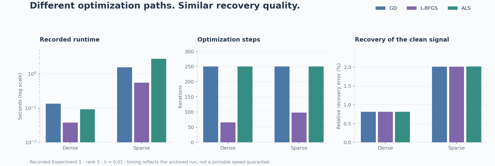
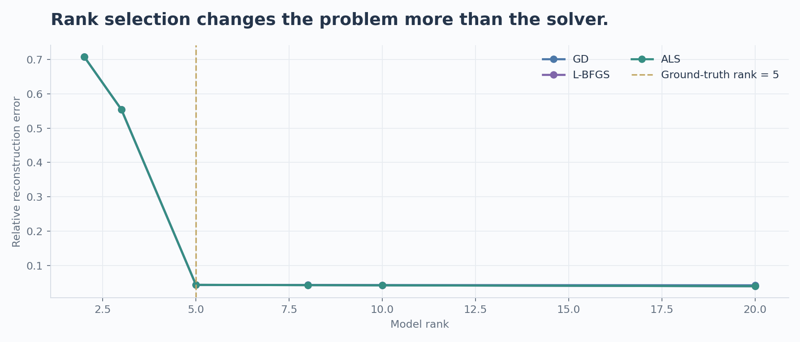

NUMERICAL OPTIMIZATION · SCIENTIFIC COMPUTING
RankLab
Low-Rank Matrix Optimization · Emory University · Spring 2026

RankLab studies regularized low-rank matrix factorization through three optimization paradigms: Gradient Descent with Armijo backtracking, L-BFGS, and Alternating Least Squares. Dense and observed-entry objectives connect the same factorization model to complete matrices and partially observed ratings.
Optimizer choice meets model choice.
How much of a result comes from the solver, and how much comes from the factorization rank, starting point, or ridge penalty? The study compares method behavior, initialization sensitivity, rank selection, regularization, and objective values along selected interpolation paths.
The model
M ≈ U Vᵀ, with a squared reconstruction or observed-entry loss and ridge penalties on both factor matrices. The objective is jointly nonconvex, while ALS uses regularized least-squares block updates.
Different paths.
Similar clean-signal recovery.

In the archived rank-5 synthetic dense run, L-BFGS converges in 66 iterations, while GD and ALS reach the 250-iteration cap. All three achieve approximately 0.815% relative recovery error to the clean matrix. Similar recovery does not imply the same regularized objective or stationarity.
Capacity determines what can be recovered.

On the controlled synthetic problem, increasing rank from two or three to the true rank five changes reconstruction quality much more than switching between the tested optimizers. The implementation also supports MovieLens 100K and superconductivity data for sparse prediction and dense reconstruction experiments.
Project team
Yiyun (Nicole) Chen · Joy Cheng · Sirui Li
MATH 347: Non-Linear Optimization · Emory University